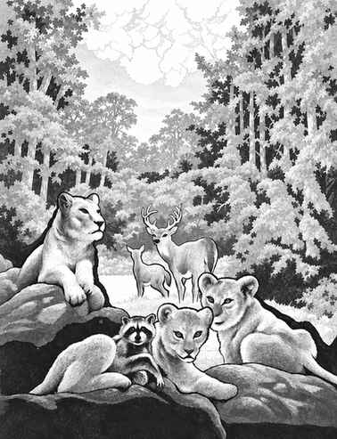

快乐狩猎场 · Happy Hunting Grounds
快乐狩猎场也称野兽之地（Beastlands），是三层森林、草原和山地组成的善良混沌位面。每一层都覆盖巨树、藤蔓、果实和野生动物；天空的颜色与季节会随旅行者的心情变化。三层分别为克里加拉（Krigala）、布鲁克斯（Brux）和卡拉苏特拉（Karasuthra）。

这里的居民包括所有善良动物、植物生物、天界生物和许多会说话的野兽。它们在外层和星界中通常具有更高的防御、更强的爪击和有限的魔法能力；离开这些位面后，这些强化会消失。云中兽（morial）是快乐狩猎场特有的漂浮生命，外形像有脸的云，能控制天气并与鸟灵交流。
野兽之地的伟大力量包括兽王、森林守护者和掌管狩猎、自然、动物与季节的神祇。旅行者若尊重猎场规则，可能得到动物向导；若为了取乐屠杀动物，整片森林会把他们视为敌人。